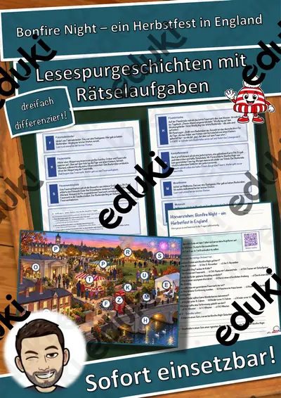
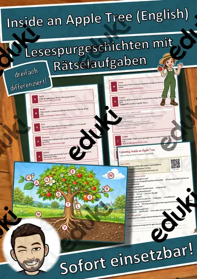
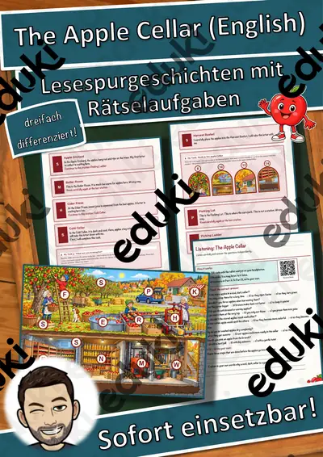

Lesespur: Baking Christmas Cookies – Lesespurgeschichte mit Rätseln auf Englisch (Klasse 8)

Lesespur: Bonfire Night: ein Herbstfest in England – Lesespurgeschichte mit Rätseln (Klasse 7)

Lesespur: Breaking Through the Ice – Lesespurgeschichte mit Rätseln auf Englisch (Klasse 6)

Lesespur: Christmas Tree Farm – Lesespurgeschichte mit Rätseln auf Englisch (Klasse 6)

Lesespur: Halloween: woher das Fest kommt und wie man es in Irland feiert – Lesespurgeschichte mit Rätseln (Klasse 3)

Lesespur: Inside an Apple Tree – Lesespurgeschichte mit Rätseln auf Englisch (Klasse 9)

Lesespur: Inside the Bunsen Burner – Lesespurgeschichte mit Rätseln auf Englisch (Klasse 9)

Lesespur: Lantern Night Adventure – Lesespurgeschichte mit Rätseln auf Englisch (Klasse 7)

Lesespur: Lunar New Year at Lin's Home – Lesespurgeschichte mit Rätseln auf Englisch (Klasse 8)

Lesespur: Potato Harvest on the Farm – Lesespurgeschichte mit Rätseln auf Englisch (Klasse 6)

Lesespur: Secrets of the Chestnut Tree – Lesespurgeschichte mit Rätseln auf Englisch (Klasse 8)

Lesespur: The Apple Cellar – Lesespurgeschichte mit Rätseln auf Englisch (Klasse 6)

Lesespur: The Quiet Snowy Forest – Lesespurgeschichte mit Rätseln auf Englisch (Klasse 6)